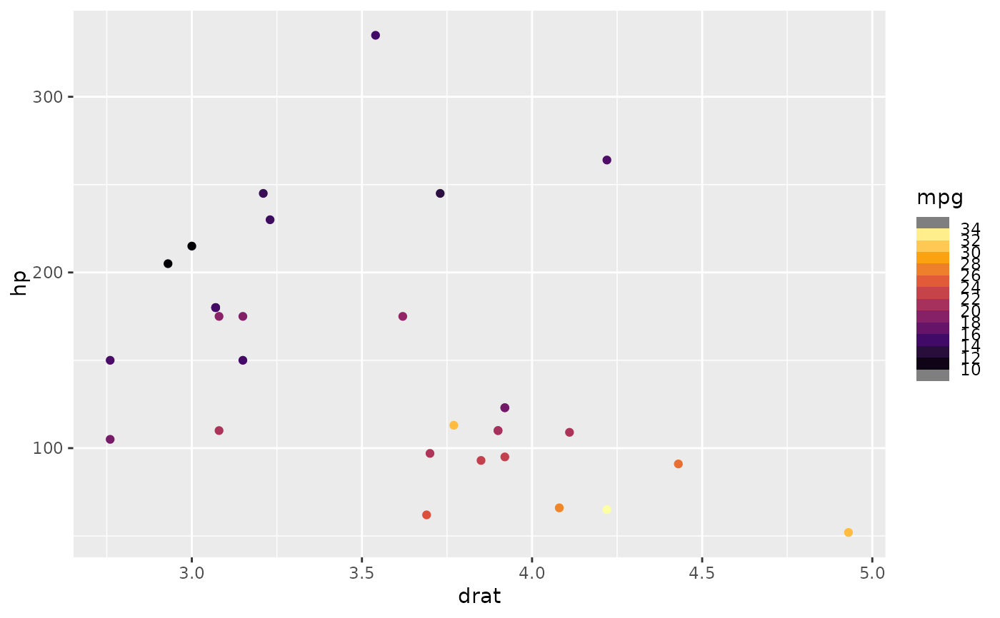

A color legend in the style of a dashboard meter
Usage
guide_colormeter(
title = ggplot2::waiver(),
title.theme = NULL,
label.theme = NULL,
legend_size = unit(5, "lines"),
legend_padding = unit(c(1.2, 1, 0.3, 1), "lines"),
title_position = c(0, 0),
arc_range = c(-4/7 * pi, 4/7 * pi),
arc_radius = 1,
arc_width = arc_radius/4,
arc_gap = arc_radius/5,
arc_rounding = 0,
label_radius = arc_radius * 1.25,
dashboard_radius = label_radius * 1.2,
dashboard_color = "black",
dashboard_fill = NA,
dashboard_linewidth = 0.5,
dashboard_linetype = 1,
clip_dashboard = TRUE,
close_dashboard = clip_dashboard,
frame_color = NA,
frame_linewidth = 0.5,
frame_linetype = 1,
aspect.ratio = 1,
show.limits = NULL,
debug = FALSE,
reverse = FALSE,
available_aes = c("colour", "color", "fill"),
...
)Arguments
- title
A character string or expression indicating a title of guide. If
NULL, the title is not shown. By default (waiver()), the name of the scale object or the name specified inlabs()is used for the title.- title.theme
A theme object for rendering the title text. Usually the object of
element_text()is expected. By default, the theme is specified bylegend.titleintheme()or theme.- label.theme
A theme object for rendering the label text. Usually the object of
element_text()is expected. By default, the theme is specified bylegend.textintheme().- legend_size
Size of the legend box.
- legend_padding
Spacing between the color meter and the legend boundary.
- title_position
<
legend-coords> 2-length vector for the x/y-position of the legend title.- arc_range
<
legend-coords> 2-length vector for the start and end angles of the color meter.- arc_radius
<
legend-coords> Radius of the color meter.- arc_width
<
legend-coords> Width of the arcs in the color meter.- arc_gap
<
legend-coords> Gap between arcs in the color meter.- arc_rounding
<
legend-coords> Rounding of arcs in the color meter.- label_radius
<
legend-coords> Radius of the labels.- dashboard_radius
<
legend-coords> Radius of the dashboard background.- dashboard_color
Dashboard background color.
- dashboard_fill
Dashboard background fill.
- dashboard_linewidth
Dashboard background line width.
- dashboard_linetype
Dashboard background line type.
- clip_dashboard
Whether the dashboard circle should clip to the legend boundary.
- close_dashboard
Whether the dashboard should be closed where it meets the legend boundary.
- frame_color
Color of the frame drawn around the arcs.
- frame_linewidth
Width of the frame drawn around the arcs.
- frame_linetype
Line type of the frame drawn around the arcs.
- aspect.ratio
Aspect ratio for the legend.
- show.limits
Logical. Should the limits of the scale be shown with labels and ticks. Default is
NULLmeaning it will take the value from the scale. This argument is ignored iflabelsis given as a vector of values. If one or both of the limits is also given inbreaksit will be shown irrespective of the value ofshow.limits.- debug
If
TRUE, axes and origin for <legend-coords> are drawn over the legend for debugging.- reverse
logical. If
TRUEthe colourbar is reversed. By default, the highest value is on the top and the lowest value is on the bottom- available_aes
A vector of character strings listing the aesthetics for which a colourbar can be drawn.
- ...
Ignored.
Examples
library(ggplot2)
# A standard plot
p <- ggplot(mtcars, aes(drat, hp)) +
geom_point(aes(color = mpg))
# Colormeter guide for color scale
p +
scale_color_viridis_c(
option = "inferno",
breaks = scales::breaks_pretty(10),
guide = guide_colormeter()
)
